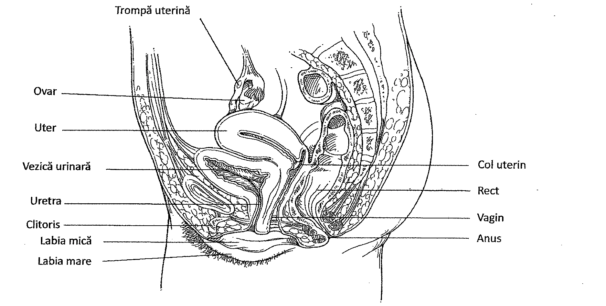
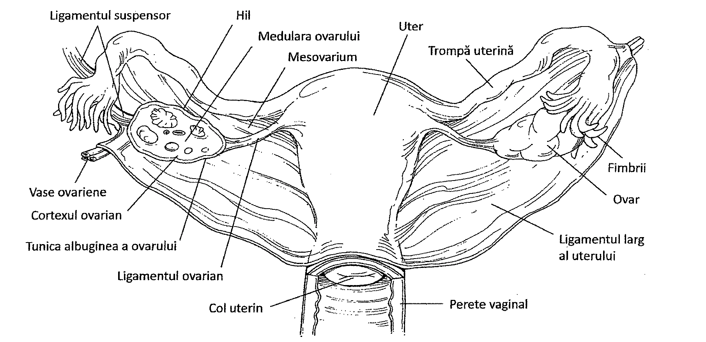
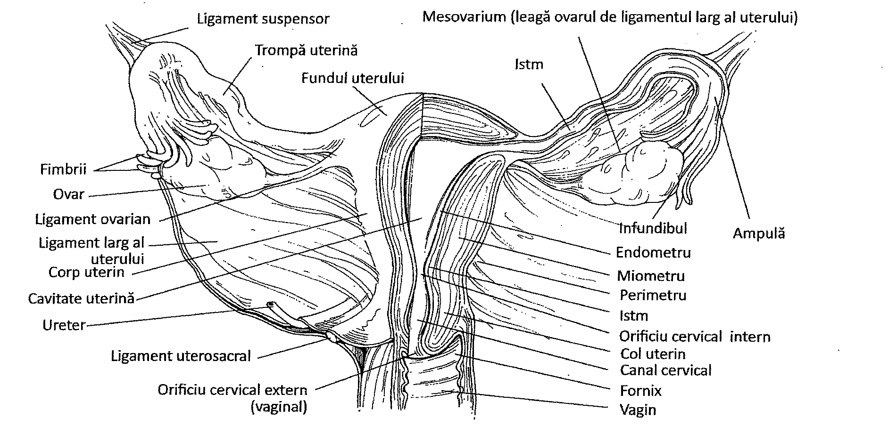
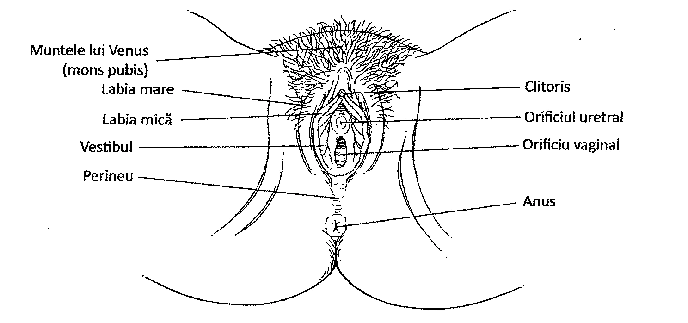
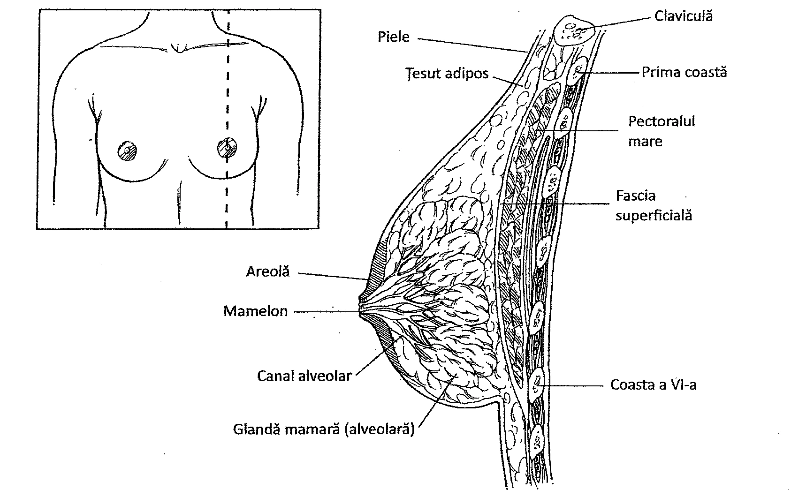
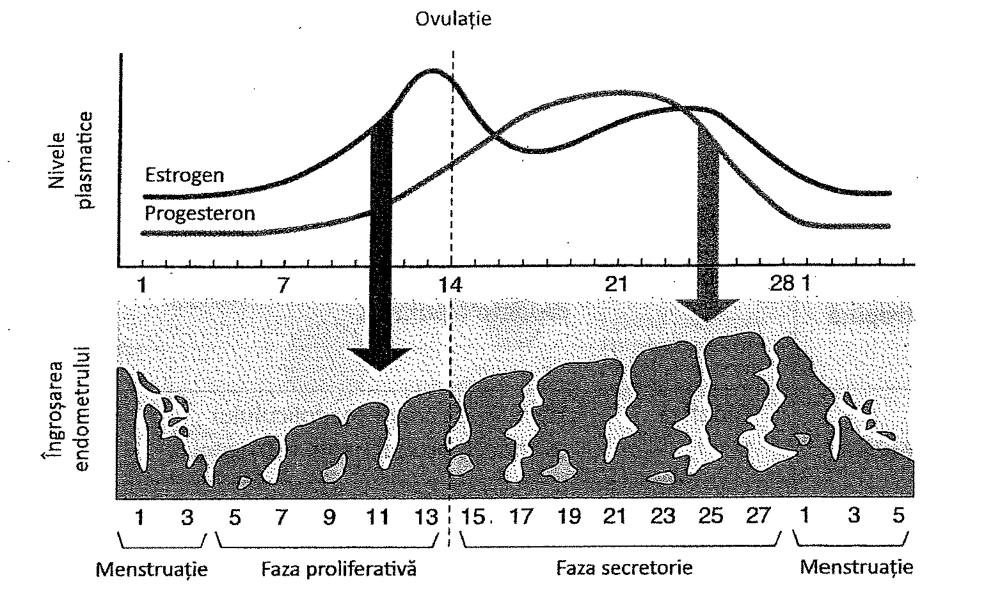
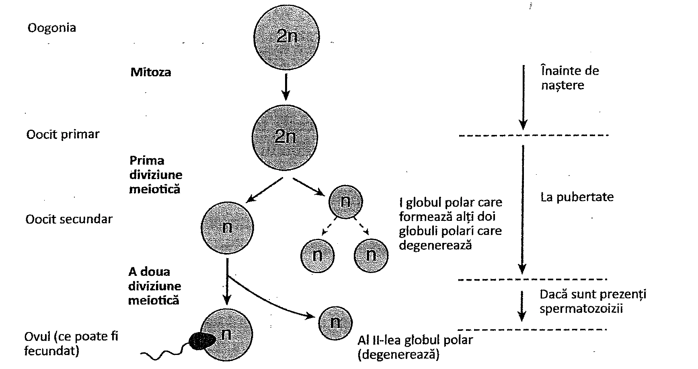
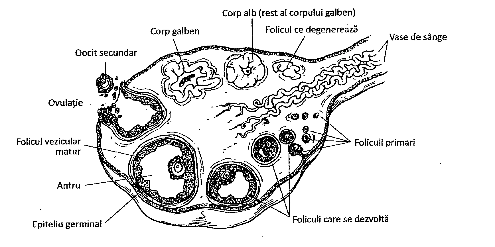
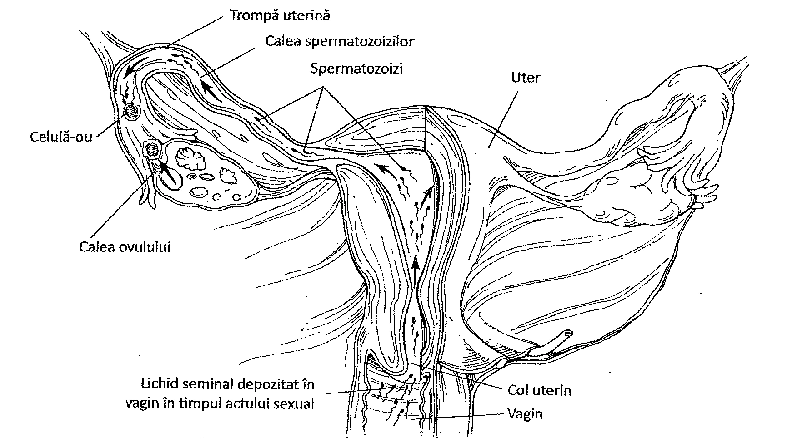
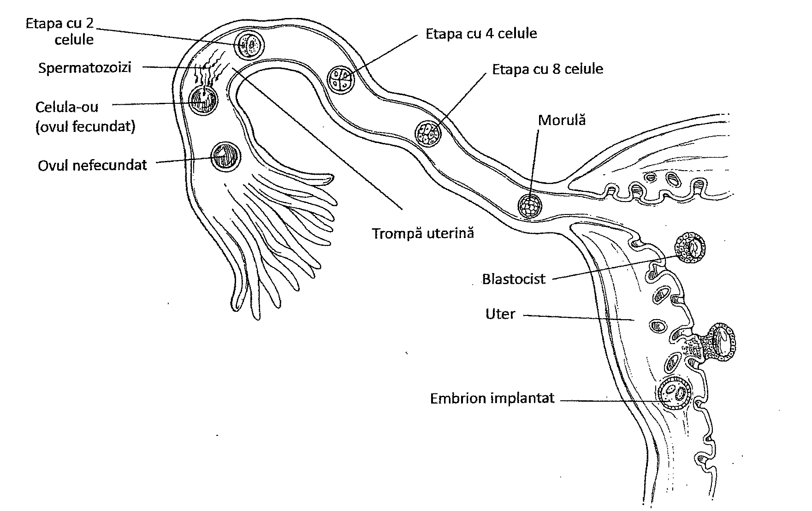

23. Sistemul reproducător feminin
Cuprinsul capitolului
- Ovarele și organele anexe
- Fiziologia reproducerii la femeie
23. Introducere
Sistemul reproducător feminin produce, înmagazinează, hrănește și transportă celule reproducătoare numite gameți. Gameții includ spermatozoizii din sistemul reproducător masculin (Capitolul 22) și ovulele din sistemul reproducător feminin. Aceste celule se unesc în procesul fecundației, formând o singură celulă, celula-ou sau zigotul. Sistemul reproducător feminin include organele de reproducere (ovarele, de asemenea, cunoscute sub numele de gonade), responsabile pentru producerea gameților și a hormonilor; mai multe ducte, care primesc și transportă gameții, glandele și organele anexe care secretă lichide; structuri ale organelor genitale externe asociate cu sistemul reproducător (Figura 23.1).
Sistemul reproducător feminin include, de asemenea, structuri cu rol de nutriție și protecție a embrionului aflat în curs de dezvoltare, și a fătului în timpul sarcinii. După sarcină, glandele mamare asigură hrana nou-născutului.
Cele mai importante organe ale tractului genital feminin sunt cuprinse într-un pliu al peritoneului numit ligamentul larg al uterului. Trompele uterine se întind de-a lungul limitei superioare a ligamentului larg și se deschid în cavitatea pelviană, lateral de ovare. Ligamentul larg se fixează pe pereții laterali și pe planșeul cavității pelviene, iar epiteliul său se continuă cu epiteliul peritoneului parietal.

23. Ovarele și organele anexe
OVARELE ȘI ORGANELE ANEXE
În sistemul reproducător feminin, ovulele sunt produse la nivelul ovarelor și sunt transportate apoi în exteriorul acestora printr-o serie de organe anexe, care oferă și suportul pentru dezvoltarea celulei ou.
OVARELE
Ovarele sunt organe pereche care produc ovulele. Sunt de talie mică, de formă migdalată, și sunt situate în apropierea pereților laterali ai cavității pelviene. Ovarele sunt situate retroperitoneal (în spatele peritoneului). Ele au aproximativ 5 cm lungime și 2,5 cm lățime. Pe lângă producerea de oocite, aceste organe secretă hormoni sexuali feminini numiți estrogeni și progesteron. Fiecare ovar este susținut de o pereche de ligamente, numite ligamentul ovarian și ligamentul suspensor (Figura 23.2).
Ovarul conține numeroase grupuri de celule ce formează foliculi. Fiecare folicul prezintă câteva straturi de celule ce înconjoară oocitul primar (imatur). Oocitele se maturează în interiorul foliculului și sunt eliberate prin procesul de ovulație. Ovulația are loc aproximativ la fiecare 28 de zile, iar după ovulație foliculul se reorganizează și devine o structură cunoscută sub numele de corp galben (corpus luteum). Corpul galben secretă hormoni. După aproximativ 14 zile, corpul galben regresează și devine corp alb (corpus albicans), producția de estrogeni și progesteron încetează, ceea ce induce menstruația.

TROMPELE UTERINE
Trompele uterine (cunoscute și sub denumirea de trompele lui Falloppio) măsoară, fiecare, aproximativ 12,5 cm lungime. În apropierea ovarului, capătul trompei se dilată și formează o structură cu aspect de pâlnie, numită infundibul. Infundibulul are numeroase prelungiri neregulate, ramificate, numite fimbrii, ce se extind spre ovar. Segmentul alungit al trompei uterine, situat proximal de infundibul se numește ampula; ea se continuă cu istmul, un segment scurt, ce se unește cu peretele uterin și se deschide în cavitatea uterină.
Epiteliul ce tapetează ampula prezintă numeroase invaginații (buzunărașe) și pliuri, iar suprafața epitelială prezintă cili. Transportul ovulului prin trompa uterină este facilitat de către cili, precum și de contracțiile peristaltice ale mușchilor netezi din pereții acesteia. În mod normal, este nevoie de aproximativ trei-patru zile pentru ca un ovulul să treacă din infundibul în uter. Fecundarea poate să se producă doar dacă ovulul, pe traseul său prin trompa uterină, întâlnește spermatozoizi în primele două zile. Ovulele nefecundate degenerează în porțiunea terminală a trompelor uterine.
Când oocitele sunt eliberate din foliculii ovarieni, acestea sunt prinse în trompele uterine de către fimbriile pulsatile. Este posibil ca ovulele să rateze intrarea în trompele uterine, ajungând în porțiunea pelviană a cavității abdomino-pelviene.
UTERUL
Uterul (denumit în trecut și mitră) este un organ cavitar, având în mod normal mărimea și forma unei pere, mai puțin în timpul sarcinii, când se mărește considerabil (Tabelul 23.1). Uterul este situat median, în porțiunea anterioară a cavității pelviene, deasupra vaginului și a vezicii urinare. Uterul este susținut de ligamentul larg.
Uterul asigură protecție mecanică și aport nutritiv pentru dezvoltarea embrionului și a fătului. Partea superioară a acestuia, care prezintă pereți groși, se numește corp uterin. Porțiunea superioară, bombată, a corpului uterin se numește fund uterin, acesta fiind locul de unire cu trompele uterine. Porțiunea inferioară a uterului se numește istm. Istmul se continuă apoi cu colul uterin, numit cervix, o structură cu aspectul unui tub muscular, ce pătrunde pe o distanță scurtă în vagin. Cavitatea uterină se continuă cu canalul cervical, ce se deschide în vagin prin orificiul extern (vaginal) al colului uterin, locul în care sunt depozitați spermatozoizii în timpul actului sexual.
| Organ | Funcție |
|---|---|
| Ovar | Produce ovule și hormoni sexuali feminini |
| Trompă uterină (Trompa lui Falloppio) | Transportă celula-ou (zigotul) aflată în diferite faze de dezvoltare spre uter; este locul fecundației |
| Uter | Protejează și hrănește fătul în timpul dezvoltării sale |
| Vagin | Organ cu rol în contactul sexual; conduce fătul în timpul nașterii; elimină mucoasa endometrială în timpul menstruației |
| Labia mare | Cuprinde și protejează celelalte organe reproducătoare externe |
| Labia mică | Formează marginile vestibulului; protejează deschiderea vaginului și a uretrei |
| Vestibul | Spațiu între labiile mici, ce include deschiderea vaginului și a uretrei |
Peretele uterin este gros și este alcătuit din trei straturi. Stratul intern este numit endometru. Endometrul este compus dintr-un strat superficial mai gros, numit strat funcțional, și un strat profund, mai subțire, numit strat bazal. Stratul funcțional este locul unde se implantează embrionul. Când fecundația nu are loc, stratul funcțional al endometrului se desprinde în timpul menstruației. Stratul bazal asigură regenerarea stratului funcțional după menstruație. Stratul mijlociu al peretelui uterin este compus dintr-un strat gros de mușchi netezi, numit miometru (Figura 23.3). Acești mușchi se contractă ritmic în travaliul din timpul nașterii. Stratul extern al peretelui uterin este numit perimetru, sau seroasă. Acesta se continuă cu mezoteliul ligamentului larg.

VAGINUL
Vaginul este un canal fibromuscular de aproximativ 9 cm lungime, ce se întinde de la colul uterin la orificiul vaginal de la nivelul vestibulului. Vaginul se poate destinde, și se extinde în sus și înspre posteriorul cavității pelviene. Vaginul este organul feminin al copulației, adesea fiind numit canalul de naștere. La locul de deschidere al colului uterin în vagin există un mic reces (nișă), cunoscut sub numele de fornix. Pereții vaginului conțin o rețea de vase sanguine și straturi de mușchi netezi. Înainte de debutul activității sexuale, o cută subțire de epiteliu, cunoscută sub numele de himen blochează parțial sau complet intrarea în vagin.
Vaginul are și rolul de a elimina fluidele în timpul menstruației. Este de asemenea locul în care pătrunde penisul în timpul actului sexual, servind și la depozitarea spermatozoizilor. În timpul nașterii, vaginul reprezintă calea de expulzare a nou-născutului.
ORGANELE GENITALE EXTERNE
Organele genitale externe se numără printre organele anexe ale tractului genital feminin. Sunt cunoscute sub denumirea generică de vulvă.
Vaginul se deschide prin orificiul vaginal într-o porțiune a vulvei numită vestibul (Figura 23.4). Această zonă conține mai multe structuri anatomice. Una din structuri, clitorisul, este o masă mică de țesut erectil, care proemină în vestibul și crește în dimensiuni în timpul excitării sexuale la femei. Glandele vestibulare, pereche (glandele Bartholin) și glandele parauretrale (glandele Skene) lubrifiază vaginul prin secrețiile lor, în timpul actului sexual. Vestibulul mai conține și deschiderea uretrei, cunoscută sub numele de orificiu uretral.
Vestibulul este delimitat de labiile mici, două pliuri alungite și delicate ale pielii care conțin glande sebacee. În partea posterioară, cele două labii mici se întâlnesc în zona cutanată dintre anus și vulvă a perineului.

Labiile mici, după cum le spune și numele, sunt mai mici decât labiile mari. Limitele (marginile) externe ale vulvei sunt delimitate de către muntele lui Venus și labiile mari. Muntele lui Venus (mons pubis) este o zonă proeminentă de țesut adipos acoperit de piele, situată în fața simfizei pubiene. După pubertate, această zonă este acoperită cu păr pubian. Labiile mari sunt două cute alungite ale pielii, care înconjoară și acoperă parțial labiile mici și structurile vestibulului. Conțin glande ce secretă un fluid care le lubrifiază pe suprafața internă.
GLANDELE MAMARE
După naștere, nou-născutul este alimentat la sân, cu lapte matern produs de glandele mamare, care sunt glande de tip alveolar (Figura 23.5). Acestea sunt situate în regiunea toracică anterioară, în țesutul subcutanat al sânilor. Producerea laptelui se numește lactație.
Glanda mamară este formată din mai mulți lobi, fiecare lob fiind alcătuit din glande apocrine care secretă laptele (glande alveolare) și care sunt drenate de ductele mamare. Lobii sunt delimitați de un țesut conjunctivo-adipos și se reunesc în porțiunea conică a fiecărui sân, numită mamelon. Pielea din jurul mamelonului are o culoare mai închisă decât pielea din jur și se numește areolă. Areola conține atât glande sebacee, cât și glande sudoripare.

Secreția laptelui este controlată de hormonul hipofizei anterioare, numit prolactină. Ejecția laptelui este controlată de hormonul oxitocină, un hormon eliberat din lobul posterior al hipofizei, ca răspuns reflex la stimularea mecanică produsă prin supt. Secreția se produce continuu, atâta timp cât eliminarea laptelui din glandele mamare este stimulată prin actul suptului.
23. Fiziologia reproducerii la femeie
FIZIOLOGIA REPRODUCERII LA FEMEIE
Fiziologia reproducerii la femeie descrie modificările sistemului reproducător feminin, asociate formării și fecundării ovulului.
CICLUL MENSTRUAL
Ciclul menstrual cuprinde modificările fiziologice și structurale din sistemul reproducător feminin, ca răspuns la modificările nivelului sanguin al hormonilor secretați de ovar. Ciclul menstrual durează aproximativ 28 de zile, ovulația producându-se de obicei la jumătatea acestei perioade.
Pe parcursul primelor 5 zile ale ciclului menstrual, stratul funcțional, îngroșat, al endometrului se desprinde de pe peretele uterin. Stratul bazal rămâne, din acesta urmând să se dezvolte un nou strat funcțional. Sângerarea (menstruația sau menstra) durează în general de la trei până la cinci zile, iar materialul eliminat este constituit din stratul funcțional al endometrului, secreții glandulare, mucus și sânge. Această etapă este denumită faza menstruală. În cursul acestei faze, nivelul sanguin al estrogenilor și progesteronului este mic și începe regenerarea stratului funcțional al endometrului.
Între zilele 6-14 ale ciclului se dezvoltă foliculii ovarieni, iar stratul funcțional al endometrului se îngroașă. Această etapă se numește faza proliferativă a ciclului. În endometru se formează glande tubulare și aportul sanguin la nivelul endometrului crește. În această etapă crește nivelul estrogenilor și al progesteronului, hormoni ce influențează regenerarea endometrului. Ovulația are loc aproximativ în ziua 14, fiind determinată de o creștere bruscă a secreției de hormon luteinizant (LH) și o creștere a nivelului de estrogeni și progesteron. După eliberarea oocitului, foliculul ovarian rămas se transformă în corpul galben.
Între zilele 15-28 ale ciclului, corpul galben al ovarului secretă progesteron și cantități mici de estrogeni. În uter, glandele endometriale încep să secrete nutrienți pentru hrănirea embrionului, în cazul în care acesta s-a format. Această fază este numită faza secretorie a ciclului (Figura 23.6).
Dacă fecundația nu are loc, corpul galben involuează, iar nivelul sanguin al estrogenilor și progesteronului scade. În absența stimulului hormonal, corpul galben degenerează. În schimb, dacă fecundația se produce, corpul galben va fi stimulat de gonadotropina corionică, un hormon secretat de blastocistul rezultat după fecundație. În absența sarcinii, scăderea nivelului hormonilor ovarieni determină constricția vaselor de sânge (vasoconstricție), iar în lipsa unui aport sanguin adecvat celulele endometriale încep să se necrozeze. Menstruația începe aproximativ în a 28-a zi și marchează prima zi a unui nou ciclu menstrual. Prima menstruație este denumită menarhă, iar perioada în care ciclurile menstruale încetează, menopauză.

OOGENEZA
Procesul prin care se formează ovulele în ovar se numește oogeneză. Oogeneza începe înainte de naștere, în timpul vieții intrauterine. În acest stadiu, celulele germinale primitive, numite oogonii, intră în faza I a diviziunii meiotice, pe care însă nu o finalizează (rămânând în profaza I). Ele devin astfel oocite primare. Există aproximativ 2 milioane de oocite primare, fiecare oocit fiind înconjurat de un număr variabil de straturi celulare, formând astfel foliculii primari. Foliculii primari sunt prezenți în ovarele femeii încă de la naștere; după naștere nu se mai produc alți foliculi primari. La pubertate rămân aproximativ 75.000 de foliculi.
La vârsta pubertății, hipotalamusul începe secreția hormonului eliberator de gonadotropină (Gonadotropin-releasing hormone, GnRH) (Tabelul 23.2). Acest hormon stimulează hipofiza anterioară să elibereze hormonul foliculostimulant (FSH). FSH-ul stimulează creșterea și maturarea câte unui folicul pe lună. Maturarea se produce în ovare, de obicei alternativ. Toate procesele de maturare încep de la oocitele primare deja prezente în ovar. LH-ul este un alt hormon secretat de hipofiză, care stimulează foliculul în curs de dezvoltare să producă estrogeni și progesteron.
Maturarea unui folicul implică dezvoltarea celulelor foliculare și modificări ale oocitelor primare. Oocitul primar, care are 46 de cromozomi, își finalizează prima fază a meiozei, cu formarea a două celule, fiecare cu câte 23 de cromozomi (Figura 23.7). Una dintre aceste celule, oocitul secundar, va forma ovulul matur, cu 23 de cromozomi; celula rămasă formează un globul polar nefuncțional, care în cele din urmă degenerează.
Oocitul secundar intră în a doua fază a meiozei (meioza II) și se oprește în metafaza II. Acest proces este stimulat de hormonul luteinizant (LH). În această fază, oocitul secundar este cunoscut ca ovul.
| Hormon | Locul sintezei | Efecte principale | Control |
|---|---|---|---|
| Hormonul eliberator de gonadotropină (GnRH) | Hipotalamus | Stimulează producerea de FSH și LH de către hipofiză | |
| Hormonul foliculostimulant (FSH) | Hipofiză | Stimulează creșterea foliculului ovarian și producția de estrogeni | Hipotalamus |
| Hormonul luteinizant (LH) | Hipofiză | Stimulează producția de progesteron și ovulația | Hipotalamus |
| Estrogenii | Ovar (folicul) | Stimulează dezvoltarea caracterelor sexuale feminine; îngroașă mucoasa uterului; inhibă producția FSH-ului | FSH |
| Prolactina | Hipofiză | Stimulează secreția laptelui | Hipotalamus |
| Oxitocina | Hipotalamus | Stimulează eliberarea laptelui; stimulează contracțiile uterine în timpul menstruației și al nașterii |
Maturarea foliculului necesită aproximativ 14 zile, foliculul matur fiind denumit și folicul vezicular. Oocitul se găsește într-o cavitate plină cu lichid numită antru, fiind înconjurat de coroana radiată, alcătuită din celule de susținere (Figura 23.8). După maturare, o creștere bruscă a nivelului de LH stimulează eliberarea oocitului din folicul, prin procesul de ovulație. Apariția unei proeminențe pe suprafața ovarului indică începerea acestui proces.
Oocitul matur este eliberat în cavitatea peritoneală, unde curenții de lichid din fimbriile mobile ale trompelor uterine îl transportă imediat în trompele uterine, de unde ajunge apoi în uter. Celulele foliculare reziduale din ovar sunt supuse unor modificări structurale și biochimice, controlate de LH, pentru a forma corpul galben (corpus luteum), o structură glandulară. Corpul galben rămâne activ aproximativ 12 zile și produce cantități mari de progesteron și estrogeni, apoi, dacă nu are loc fecundația începe să degenereze. În cazul în care fecundația are loc, corpul galben continuă să secrete hormoni.


FECUNDAȚIA
Fecundația presupune unirea gameților în timpul reproducerii sexuate. În timpul fecundației, un spermatozoid care conține 23 de cromozomi se unește cu un ovul care conține 23 de cromozomi și formează un ovul fecundat (celulă-ou) cu 46 de cromozomi. Pentru ca spermatozoidul să se unească cu ovulul, acesta trebuie să fie capacitat. Capacitația presupune fragilizarea membranei spermatozoidului, pentru a permite eliberarea enzimelor din acrozom. Capacitația are loc în timp ce spermatozoizii parcurg mucusul sistemului reproducător feminin, în acest timp modificându-se membrana celulară a acestora. Consecutiv, spermatozoidul se poate uni cu ovulul. Pentru ca un singur spermatozoid să fecundeze ovulul, sunt necesare enzimele eliberate din acrozomii unui număr mare de spermatozoizi.
Ovulul fecundat se numește zigot. Sexul zigotului este determinat de tipul de cromozomi. Dacă sunt prezenți doi cromozomi X, individul va fi de sex feminin, dacă este prezent un cromozom X și un cromozom Y, individul va fi de sex masculin.
De obicei, fecundația are loc în trompele uterine, după ce spermatozoizii depozitați în vagin înoată prin colul uterin și uter până la trompe (Figura 23.9). Enzimele din acrozomul spermatozoizilor digeră straturile celulare exterioare ale ovulului, și numai un singur spermatozoid reușește să îl penetreze. Imediat după aceea, în membrana ovulului au loc modificări ce fac imposibilă penetrarea altor spermatozoizi. În acest moment oocitul secundar își finalizează meioza, având 23 de cromozomi în nucleu, și un alt globul polar (care degenerează). Nucleul spermatozoidului, cu 23 de cromozomi, se unește cu nucleul ovulului, formându-se astfel nucleul zigotului cu 46 de cromozomi.

După fecundație, zigotul suferă un proces de segmentare, sau mitoză fără creștere celulară, pentru a forma 16 sau mai multe sfere unicelulare solide, numite morulă. Apoi, morula dezvoltă o structură celulară cavitară, plină cu lichid, numită blastocist, mai mare decât ovulul. Blastocistul coboară prin trompa uterină și ajunge la uter în aproximativ 4 sau 5 zile după ovulație. În cavitatea uterină, blastocistul absoarbe nutrienții necesari din secrețiile glandelor uterine. În câteva zile, vine în contact cu peretele endometrului, erodează epiteliul și se fixează în endometru (Figura 23.10). Acest proces, cunoscut sub numele de implantare, este de obicei finalizat în aproximativ 5 zile după fecundație. După ce fecundația a avut loc, corpul galben din ovar continuă să producă progesteron, care împiedică eliminarea mucoasei endometriale. Prelungirile blastocistului, numite vilozități coriale, se unesc cu țesuturile uterine și formează un organ numit placentă. Placenta este mediul de transfer pentru gaze dizolvate, substanțe nutritive și reziduuri, între fluxul sanguin embrionar și cel matern. Placenta devine, de asemenea, un organ endocrin producând estrogeni și progesteron pentru a menține sarcina.

La scurt timp după ce a avut loc implantarea, în sângele matern se poate detecta gonadotropina corionică umană (hCG), produsă de celulele placentare. Prezența hCG-ului în sânge sau urină reprezintă un indiciu sigur că fecundația a avut loc și începe dezvoltarea sarcinii. În prezența hCG-ului, corpul galben nu degenerează. În schimb, acesta rămâne funcțional și continuă să producă progesteron și estrogeni timp de aproximativ trei luni, după care degenerează. Din acel moment, placenta este cea care secretă activ estrogenii și progesteronul, necesari pentru a menține sarcina.